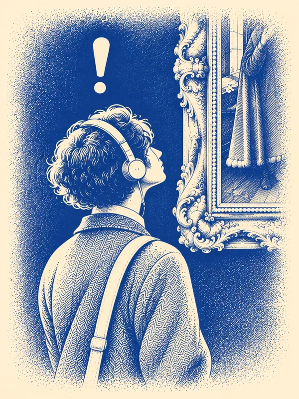

DIVE
바다 장면을 불러오지 못했어요.
들리지 않아도, 그림 속까지.
01 문제
글 설명만으로는
그림의 어디인지 직접 찾아야 해요
미술관에서 오디오 도슨트를 들을 수 없는 청각장애인 관람객은, 글 설명을 읽고 "그림의 어느 부분이 무엇을 뜻하는지"를 글과 그림을 번갈아 보며 스스로 찾아야 해요. 그래서 작품을 깊이 감상하기 어려워요.

오디오 도슨트
귀로 듣는 동안 눈은 그림에 머물러요. "왼쪽 위 거울을 보세요"라는 말을 따라 바로 그곳을 봐요.
글 설명만 있을 때
글을 읽고, 그림으로 눈을 옮기고, 다시 글로 돌아와요. 시선이 계속 오가요. 작은 디테일은 어디인지 놓치기 쉬워요.
대상: 문자 자막을 읽을 수 있는 난청·후천적 청각장애 관람객. 수어가 제1언어인 농인을 위한 수어 영상은 이번 범위 밖이에요.
02 해결
DIVE는 그림이 먼저
다가가요
글을 읽고 그림 속을 헤매는 대신, 해설이 가리키는 곳으로 그림이 직접 들어가 그곳만 비춰 줘요.
설명하는 곳으로 다가가요
문장마다 그림이 그 부분으로 천천히 확대·이동해요.
그 부분만 비춰요
주변을 어둡게 가라앉혀, 볼 곳만 또렷하게 남겨요.
그림 위에서 바로 읽어요
자막이 그림 위에 겹쳐 있어 시선을 옮기지 않아도 돼요.
시연하러 가기
직접 눌러 보세요
미술관에서 그림 옆 QR을 찍었다고 생각하고, 그림을 누르고 [들어가기]를 누른 뒤 [다음]으로 넘겨 보세요. 테스트 질문이나 기록 없이 해설만 볼 수 있어요.
이렇게 써요
- 1
그림 옆 QR 찍기
휴대폰 카메라로 작품 옆 QR을 찍으면 해설이 열려요. 앱을 설치하지 않아도 돼요.
- 2
[들어가기]
작품 이름과 그림 전체가 보이는 첫 화면에서 [들어가기]를 눌러요.
- 3
[다음]으로 넘기기
문장마다 그림이 설명하는 곳으로 이동해요. 내 속도에 맞춰 [이전]·[다음]으로 넘겨요.
자주 묻는 질문
소리가 나나요?
아니요. DIVE는 소리 없이 글과 그림의 움직임만으로 해설해요. 미술관 안에서 이어폰 없이 볼 수 있어요.
움직임이 어지러우면 어떻게 하나요?
기기 설정에서 '동작 줄이기'(움직임 줄이기)를 켜면, 첫 화면의 그림 이동과 화면 전환 효과가 줄어들어요.
어떤 기기에서 볼 수 있나요?
휴대폰 브라우저에 맞춰 만들었어요. PC에서는 휴대폰 크기의 화면으로 보여요.
해설 내용은 어디서 왔나요?
각 작품을 소장한 미술관(메트로폴리탄 미술관, 런던 내셔널 갤러리)의 공식 설명에서 벗어나지 않게 썼어요.
문의는 어디로 하나요?
프로젝트 저장소(GitHub)에 남겨 주세요.